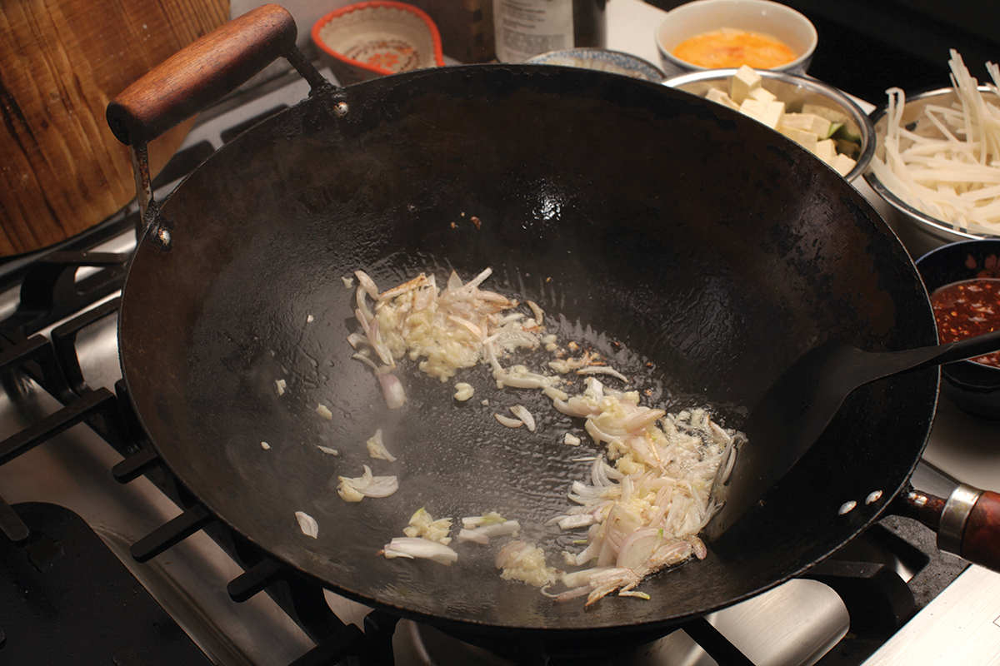
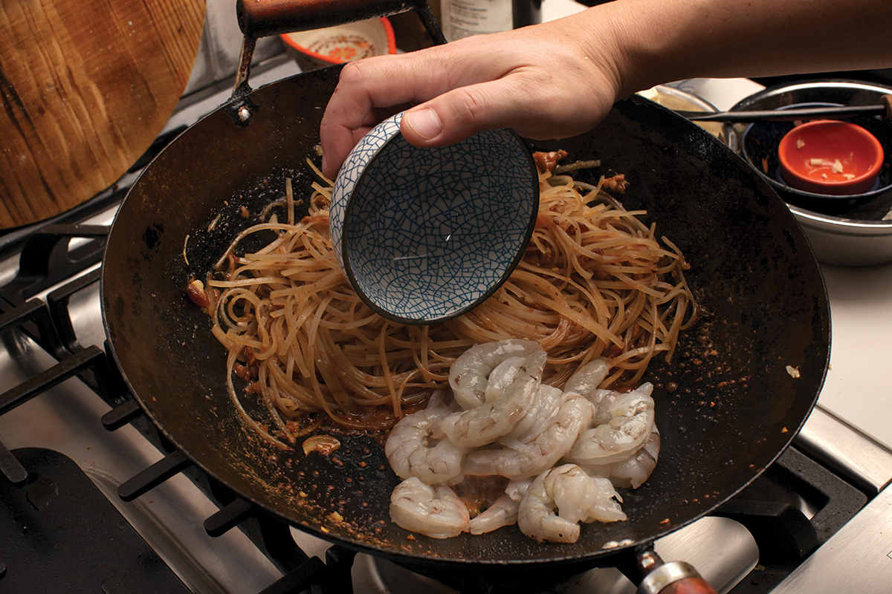
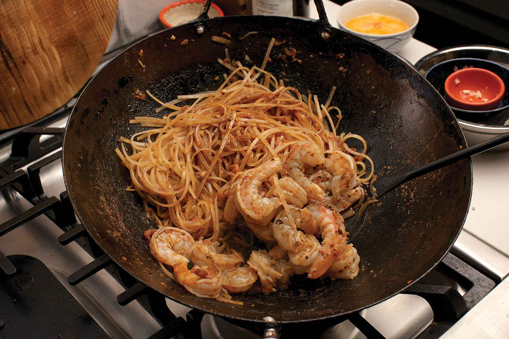
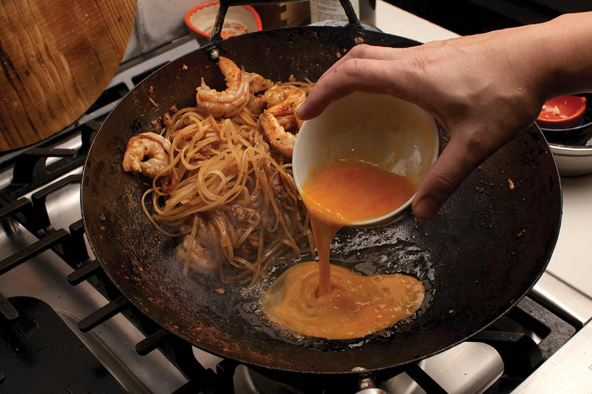
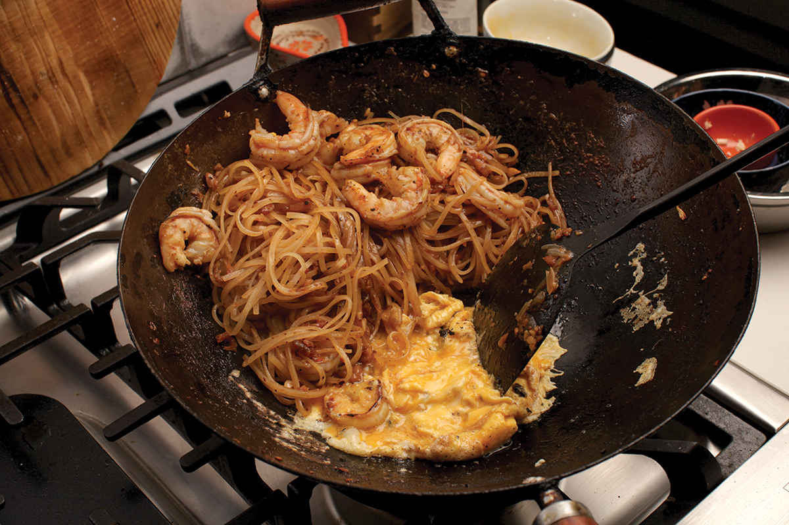
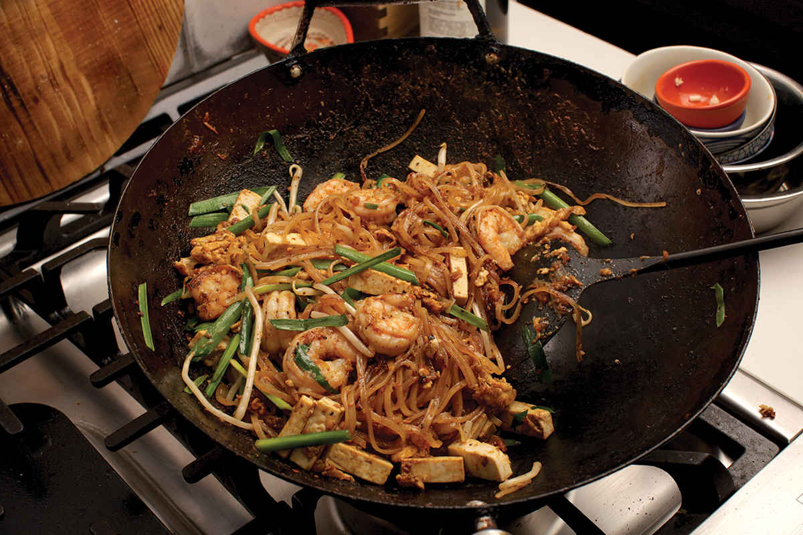

PAD THAI
|
Yield Serves 2 to 3 |
Active Time 15 minutes Total Time 30 minutes |
Thai chile flakes are quite spicy, so adjust according to taste. You can also use Korean gochugaru or Sichuan ground er jing tiao for a milder flavor (or omit the chiles entirely). The shrimp, preserved radish, and shrimp paste are all optional ingredients. See “The Pad Thai Pantry” above for more details. For the plumpest, juiciest shrimp, follow the brining instructions on here. Chinese garlic chives (nira in Japanese markets) look like scallions but have flat leaves that look like large blades of grass. They have a milder flavor than scallions. You can use flowering chives, yellow chives, or scallions in their place if you cannot find them. If using scallions, halve the number.
INGREDIENTS
For the Noodles:
6 ounces (170 g) pad Thai noodles (¼-inch-wide dry rice noodles)
For the Sauce:
2 ounces (60 g) palm sugar or dark brown sugar
3 tablespoons (45 ml) fish sauce
3 tablespoons (45 ml) prepared tamarind pulp (see here)
1 teaspoon ground Thai chile (optional; see Notes)
For the Stir-Fry:
¼ cup (60 ml) vegetable oil
1 medium shallot (about 1½ ounces/45 g), thinly sliced
3 medium garlic cloves (8 g), smashed with the side of a knife and roughly chopped
2 tablespoons (5 g) dried small shrimp (optional; see Notes)
1 tablespoon (15 ml) shrimp paste (optional)
3 tablespoons (20 g) chopped preserved sweet radish (optional; see Notes)
8 ounces (225 g) large shrimp, peeled (see Notes)
2 large eggs
1 cup (about 3 ounces/90 g) mung bean sprouts
5 or 6 Chinese garlic chives (about 3 ounces/90 g), sliced on a sharp bias into 1- to 2-inch pieces (see Notes)
4 ounces (120 g) baked or super firm tofu, cut into ½- by ½- by 2-inch blocks
To Serve:
½ cup (80 g) roasted peanuts or Fried Peanuts (here), gently crushed in a mortar and pestle
Lime wedges
Raw Chinese garlic chives (Japanese nira)
Raw mung bean sprouts
Bangkok-style table condiments, such as Prik Nam Som (here), fish sauce (such as Nam Pla Prik on here), sugar, and Thai chile flakes
DIRECTIONS
1 For the Noodles: Place the noodles in a bowl and cover with warm water. Let the noodles soak, agitating them occasionally, until they are soft enough to bend without breaking, but not mushy, about 20 minutes. Drain through a fine-mesh strainer and reserve.
2 For the Sauce: Place the palm sugar in a mortar and pestle and pound until it is fully crushed. Add the fish sauce, tamarind pulp, and ground chile and grind with a circular motion with the mortar and pestle until the sugar is dissolved. If you don’t have a mortar and pestle, you can crush the palm sugar on a firm countertop under a heavy pot, then stir it into the fish sauce and tamarind pulp to dissolve. (Also, get a mortar and pestle.)
3 BEFORE YOU STIR-FRY, GET YOUR BOWLS READY:
- a. Garlic and shallots
- b. Noodles
- c. Sauce, dried shrimp, shrimp paste, and preserved radish (if using)
- d. Raw shrimp
- e. Eggs
- f. Bean sprouts, Chinese garlic chives, and tofu
- g. Serving platter
4 For the Stir-Fry: Heat 2 tablespoons (30 ml) of the oil in a wok over high heat until shimmering. Add the garlic and shallots and cook, stirring, until fragrant and softened but not browned, about 30 seconds.
5 Add the noodles, followed by the sauce, dried shrimp, shrimp paste, and preserved radish. Stir and toss vigorously until the noodles have absorbed about half the sauce, about 45 seconds.
6 Push the noodles to the side of the wok, then position the wok so that the burner is mainly heating the now-empty space. Add the shrimp to the empty space and cook them, stirring and flipping occasionally, until they are no longer translucent on either side, about 45 seconds. Toss everything in the pan together.
7 Push the noodles and shrimp to the side of the wok again and position the wok so that the burner is mainly heating the now-empty space. Add the remaining 2 tablespoons (30 ml) of oil, then add the eggs. Let them cook until just starting to set, about 10 seconds, then break them up with the spatula and scramble them.
8 Add the bean sprouts, Chinese garlic chives, and tofu, toss everything together, and stir-fry until the chives and bean sprouts are wilted and the noodles have begun to crisp and char in spots, about 1 minute longer.
9 Transfer to a serving platter and sprinkle with the peanuts. Serve immediately, passing lime wedges, raw garlic chives and bean sprouts, and table condiments for each diner to customize the dish as desired.
Pad Thai, Step by Step






